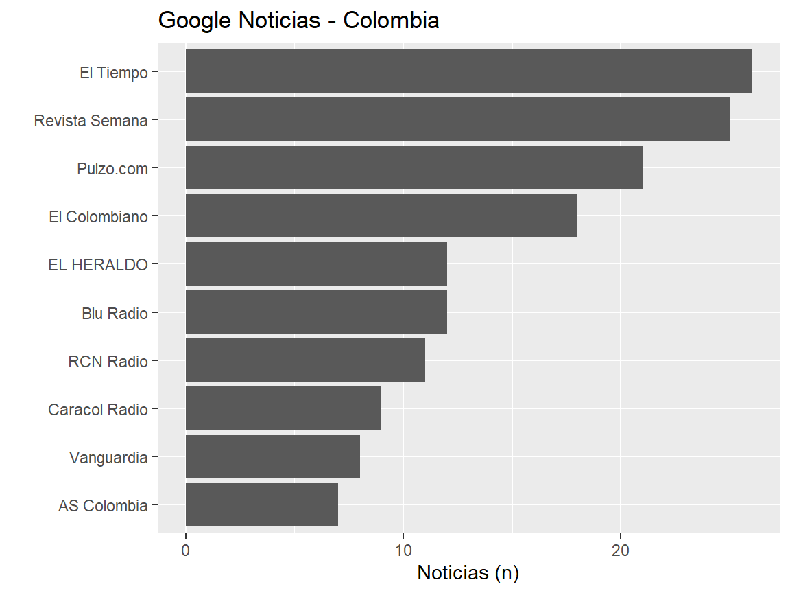
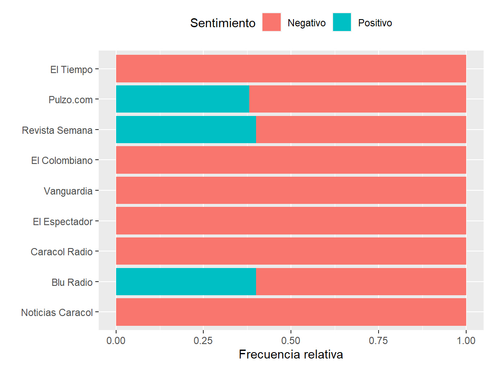
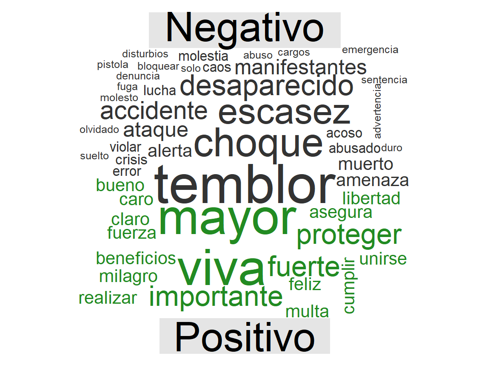

Código
install.packages(c(
"tidyverse",
"rvest",
"lubridate",
"tidytext",
"tm",
"wordcloud",
"wordcloud2",
"reshape2"
),
dependencies = TRUE)Google Noticias
Este documento tiene como propósito ejemplificar técnicas de web scraping con R y análisis exploratorio de datos.
Para ejecutar este documento es necesario tener instalado lo siguiente:
Para garantizar la reproducibilidad de este documento es necesario instalar las siguientes bibliotecas de R:
Si aún no tiene instalada estas bibliotecas puede ejecutar el siguiente código para instalarlas:
install.packages(c(
"tidyverse",
"rvest",
"lubridate",
"tidytext",
"tm",
"wordcloud",
"wordcloud2",
"reshape2"
),
dependencies = TRUE)Para ver el código completo de este documento puede dar clic donde señala la flecha roja de la siguiente imagen:

googleNoticiasR()url de Google Noticias desde la cual el usuario desea obtener las noticias.googleNoticiasR <- function(url) {
titulo_noticia <-
url %>%
read_html() %>%
html_elements("body") %>%
html_elements(xpath = '//a[@class = "WwrzSb"]') %>%
html_attr("aria-label")
fuente_noticia <-
url %>%
read_html() %>%
html_elements("body") %>%
html_elements(xpath = '//span[@class = "vr1PYe"]') %>%
html_text()
fecha_noticia <-
url %>%
read_html() %>%
html_elements("body") %>%
html_elements(xpath = '//time[@class = "hvbAAd"]') %>%
html_attr("datetime") %>%
ymd_hms()
df_noticias <-
data.frame(
noticia = titulo_noticia,
fuente = fuente_noticia,
fecha = fecha_noticia,
fecha_consulta = Sys.time()
)
return(df_noticias)
}library(tidyverse) # manipulación de datos
library(rvest) # web scraping
library(lubridate) # manipulación de fechas
library(tidytext) # procesamiento de texto
library(tm) # stopWords
library(wordcloud) # Nube de palabras
library(wordcloud2) # Nube de palabras
library(reshape2) # Remodelamiento de datosPrimero guardamos la URL para las noticas de Colombia en un objeto de nombre url_colombia. Cabe mencionar que este nombre lo asigna el usuario.
url_colombia <- "https://news.google.com/topics/CAAqJggKIiBDQkFTRWdvSUwyMHZNREZzY3pJU0JtVnpMVFF4T1NnQVAB?hl=es-419&gl=CO&ceid=CO%3Aes-419"Luego usamos la función googleNoticiasR() e ingresamos url_colombia como argumento de entrada. Guardamos este resultado en un objeto de nombre noticias_colombia.
noticias_colombia <- googleNoticiasR(url = url_colombia)La ejecución anterior devuelve un dataframe como se muestra a continuación. La función head() se utiliza para imprimir sólo las primeras 6 filas de la tabla.
noticias_colombia %>%
head()Podemos consultar el total de noticias (número de filas):
noticias_colombia %>%
nrow()[1] 232Los nombres de la base de datos pueden ser consultados con la función names():
noticias_colombia %>%
names()[1] "noticia" "fuente" "fecha" "fecha_consulta"Primero guardamos la URL para las noticas de Colombia en un objeto de nombre url_negocios. Cabe mencionar que este nombre lo asigna el usuario.
url_negocios <- "https://news.google.com/topics/CAAqLAgKIiZDQkFTRmdvSUwyMHZNRGx6TVdZU0JtVnpMVFF4T1JvQ1EwOG9BQVAB?hl=es-419&gl=CO&ceid=CO%3Aes-419"Luego usamos la función googleNoticiasR() e ingresamos url_negocios como argumento de entrada. Guardamos este resultado en un objeto de nombre noticias_negocios.
noticias_negocios <- googleNoticiasR(url = url_negocios)
noticias_negocios %>%
head()Primero guardamos la URL para las noticas de Colombia en un objeto de nombre url_deportes. Cabe mencionar que este nombre lo asigna el usuario.
url_deportes <- "https://news.google.com/topics/CAAqLAgKIiZDQkFTRmdvSUwyMHZNRFp1ZEdvU0JtVnpMVFF4T1JvQ1EwOG9BQVAB?hl=es-419&gl=CO&ceid=CO%3Aes-419"Luego usamos la función googleNoticiasR() e ingresamos url_deportes como argumento de entrada. Guardamos este resultado en un objeto de nombre noticias_deportes.
noticias_deportes <- googleNoticiasR(url = url_deportes)
noticias_deportes %>%
head()unnest_tokens() de la biblioteca tidytext.tokens_colombia <-
noticias_colombia %>%
unnest_tokens(output = "token", input = noticia)
tokens_colombia %>%
head()Algunas palabras en la columna token no tienen propiedades informativas, por ejemplo, conectores, artículos, pronombres, preposiciones, etc. Es común en la minería de texto utilizar stop words para cada lenguaje, en este caso para el castellano. Podemos acceder a estas palabras a través de la función stopwords() de la biblioteca tm. Es importante mencionar que es posible que queden algunas palabras que no son informativas, de tal manera que se recomienda profundizar más en este tema.
Asignamos las stop words a un objeto de nombre stop_spanish:
stop_spanish <- stopwords(kind = "spanish")Tenemos en total el siguiente número de stop words en español:
stop_spanish %>%
length()[1] 308Ahoa filtramos las palabras de la columna token que están dentro de las palabras sin significado (stop words) y asignamos el resultado a un objeto de nombre tokens_colombia_final. Note que en la columna token quedan números, que eventualmente podrían ser filtrados para el análisis, no obstante, se recomienda profundizar en cuál debería ser la limpieza del texto más adecuada para su análisis. En este caso hacemos caso omiso de estos datos.
tokens_colombia_final <-
tokens_colombia %>%
filter(!token %in% stop_spanish)
tokens_colombia_final %>%
head()noticias_colombia. Observe que algunas fuentes se repiten, por ejemplo, El Tiempo y EL TIEMPO, R los define como entidades diferentes porque no están escritas de la misma manera, aunque esta característica es fácil de resolver lo dejaremos así y cada usuario podrá direccionar la depuración bajo la estructura correcta.noticias_colombia %>%
count(fuente, sort = TRUE)Podemos graficar los 10 primeros medios de comunicación con mayor número de noticias:
noticias_colombia %>%
count(fuente, sort = TRUE) %>%
slice(1:10) %>%
ggplot(aes(x = reorder(fuente, n), y = n)) +
geom_col() +
coord_flip() +
labs(x = "", y = "Noticias (n)", title = "Google Noticias - Colombia")
tokens_colombia_final. Observamos que la palabra más frecuente en las noticias es “petro”.tokens_colombia_final %>%
count(token, sort = TRUE)Como son tantas palabras, es posible representar esta información a través de nubes de palabras. Este proceso lo llevamos a cabo con la biblioteca wordcloud2.
tokens_colombia_final %>%
count(token, sort = TRUE) %>%
wordcloud2(data = ., backgroundColor = "black")Palabra denota la información en español, la variable Word es su traducción al inglés y la Puntuacion (sin tilde) denota el score determinado por el léxico AFINN.# URL
url_sentimiento <-
"https://raw.githubusercontent.com/jboscomendoza/rpubs/master/sentimientos_afinn/lexico_afinn.en.es.csv"
# Lectura de datos
df_sentimiento <-
read_csv(url_sentimiento)
df_sentimiento %>%
head()Si usted desea descargar el archivo anterior puede ejecutar el siguiente código:
download.file(url = url_sentimiento, destfile = "datos_sentimiento_spanish_AFINN.csv")Vamos a cambiar el nombre Palabra por token, para que podamos unir a la tabla tokens_colombia_final y seleccionamos sólo las variables token y Puntuacion. Además, discretizamos la variable Puntuacion en una nueva variable llamada sentimiento, de tal manera que si la Puntuacion es mayor a 0 se le asigna el nivel Positivo, de lo contrario será Negativo. Asignamos este resultado a un nuevo objeto de nombre sentimiento_spanish.
sentimiento_spanish <-
df_sentimiento %>%
rename(token = Palabra) %>%
select(token, Puntuacion) %>%
mutate(sentimiento = if_else(Puntuacion > 0, "Positivo", "Negativo"))
sentimiento_spanish %>%
head()Ahora unimos los datos de sentimiento con la tabla tokens_colombia_final. La unión la realizamos con la función inner_join(), de tal manera que sólo serán tenidas en cuenta palabras que estén en ambas tablas. Note que la nueva tabla se reduce, ya que muchas palabras de las noticias no están presente en el dataframe sentimiento_spanish. Es importante mencionar que esta es una aproximación simple de análisis de sentimientos, sin embargo, podrían ser utilizadas técnicas más robustas, por ejemplo, Deep Learning.
noticias_sentimiento <-
inner_join(x = tokens_colombia_final, y = sentimiento_spanish, by = "token")
noticias_sentimiento %>%
head()Podemos consultar el número de filas de la nueva tabla.
noticias_sentimiento %>%
nrow()[1] 119Podemos responder a la siguiente pregunta, ¿Predominan las palabras positivas o negativas? Parece que son más las noticias que tiene palabras negativas que positivas.
noticias_sentimiento %>%
count(sentimiento)¿Cuál medio de comunicación es más negativo o positivo en sus noticias?
noticias_sentimiento %>%
count(fuente, sentimiento, sort = TRUE)Podemos representar el resultado anterior a través de un gráfico. Para tener una representación más transparente filtramos medios de comunicación con más de 3 noticias.
noticias_sentimiento %>%
count(fuente, sentimiento, sort = TRUE) %>%
filter(n > 3) %>%
ggplot(aes(x = reorder(fuente, n), y = n, fill = sentimiento)) +
geom_col(position = "fill") +
coord_flip() +
labs(x = "", y = "Frecuencia relativa", fill = "Sentimiento") +
theme(legend.position = "top")
Hasta ahora hemos usamos la variable sentimiento, pero también podríamos calcular alguna métrica estadística con la variable Puntuacion. En este caso calculamos la mediana de la Puntuacion y obtenemos el número de datos (N) con los cuales es calculada la métrica.
noticias_sentimiento %>%
group_by(fuente) %>%
summarise(
mediana_sent = median(Puntuacion),
N = n()
) %>%
arrange(desc(mediana_sent))Podemos graficar la nube de palabras para el sentimiento positivo y negativo a través de la biblioteca wordcloud. Para este proceso fíjese que “remodelamos” los datos a través de la función acast() de la biblioteca reshape2. Este proceso es necesario para obtener la nube de palabras comparativa con la función comparison.cloud().
noticias_sentimiento %>%
count(token, sentimiento, sort = TRUE) %>%
acast(token ~ sentimiento, value.var = "n", fill = 0) %>%
comparison.cloud(colors = c("gray20", "forestgreen"),
max.words = 100)
Para tener contexto de lo que signfica el análisis de sentimientos, se recomienda revisar los siguientes recursos de información: